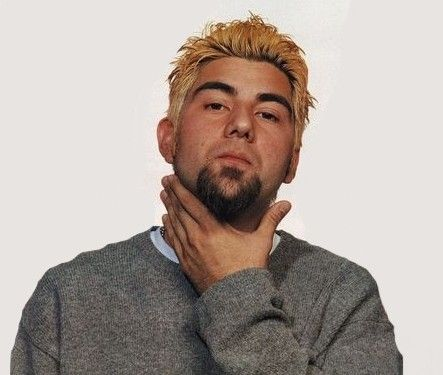
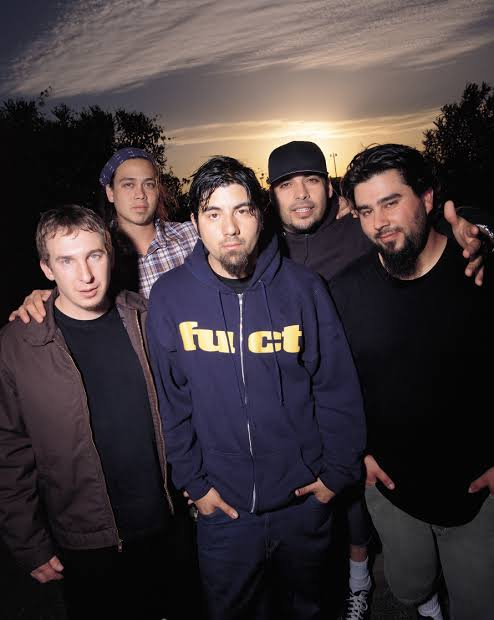
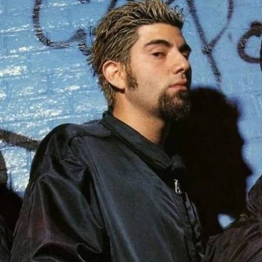
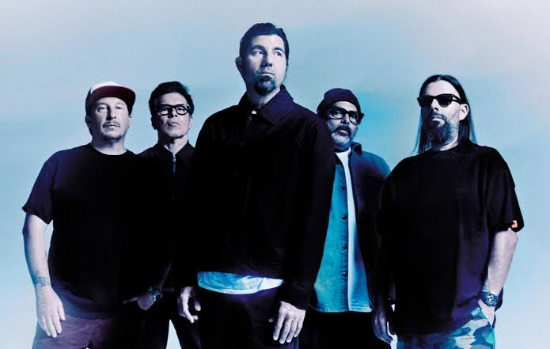
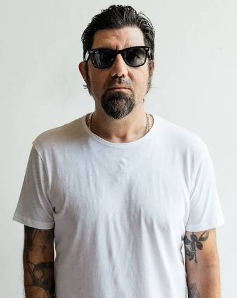
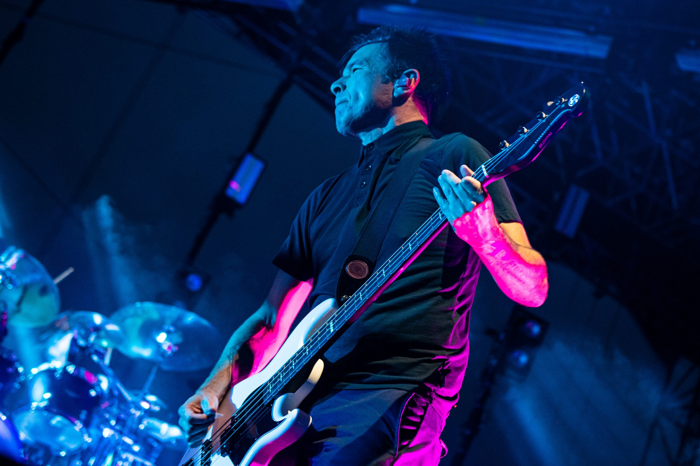

Chino Moreno (Historia de Deftone)

< Desde las raíces del skate rock en Sacramento hasta la atmósfera etérea de White Pony. Descubre cómo la banda redefinió el metal alternativo mezclando agresión, melancolía y texturas sónicas únicas. Utiliza el buscador para conocer los detalles sobre Change (In the House of Flies), el legado de Chi Cheng o la mente creativa de Chino Moreno
La Tormenta Interna: El Legado Inconcluso
El momento más oscuro para Deftones ocurrió en 2008, cuando el bajista original Chi Cheng sufrió un catastrófico accidente automovilístico que lo dejó en un estado de consciencia mínima. La tragedia no solo paralizó a la banda, sino que sepultó indefinidamente Eros, el sexto álbum de estudio que se encontraba a mitad de grabación. El grupo decidió congelar ese material por respeto y reclutar a Sergio Vega para canalizar su dolor en Diamond Eyes. Tras el fallecimiento de Chi en 2013, aquellas sesiones pasaron a la historia como el santo grial oculto de la banda
La banda en la era White Pony y la formación clásica
Tras el impacto crudo de sus primeros trabajos, Deftones alcanzó su madurez creativa en el año 2000. El grupo consolidó su alineación más icónica e incorporó texturas electrónicas definitivas para grabar White Pony, su obra maestra y el disco que redefinió el género
Formación icónica (era White Pony)




Con el tiempo llegaron Deftones y Saturday Night Wrist. Tras la trágica pérdida de Cheng, la banda se reinventó con la incorporación de Sergio Vega y discos aclamados como Diamond Eyes, Gore y su místico regreso con Ohms.
Formación reciente
Deftones mantiene su núcleo creativo inalterable. La alineación actual sigue liderada por Chino Moreno, Stephen Carpenter y Abe Cunningham, con músicos clave que ocuparon los puestos vacíos en el bajo y los teclados tras 2021:


.jpg)
.jpg)
.jpg)

El ascenso al estrellato (1999–2008)

Videoclip oficial de Psychosocial, uno de los temas más emblemáticos de la etapa posterior a All Hope Is Gone (2008), when Slipknot ya era headliner mundial.
El debut homónimo de 1999 estalló con «Wait and Bleed» y «Spit It Out»...